An important body of chemical reactions, differing from ionic or free radical reactions in a number of respects, has been recognized and extensively studied. Among the characteristics shared by these reactions, three in particular set them apart.: 1. They are relatively unaffected by solvent changes, the presence of radical initiators or scavenging reagents, or (with some exceptions) by electrophilic or nucleophilic catalysts. 2. They proceed by a simultaneous (concerted) series of bond breaking and bond making events in a single kinetic step, often with high stereospecificity. 3. In agreement with 1 & 2, no ionic, free radical or other discernible intermediates lie on the reaction path.
Since reactions of this kind often proceed by nearly simultaneous reorganization of bonding electron pairs by way of cyclic transition states, they have been termed pericyclic reactions. The four principle classes of pericyclic reactions are termed: Cycloaddition, Electrocyclic, Sigmatropic, and Ene Reactions. A general illustration of each class will be displayed by clicking on the following diagram. The cycloaddition and ene reactions are shown in their intermolecular format. Corresponding intramolecular reactions, which create an additional ring, are well known.
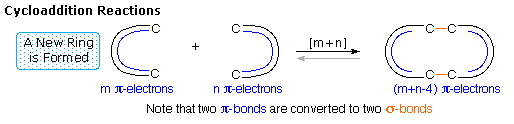
All these reactions are potentially reversible (note the gray arrows). The reverse of a cycloaddition is called cycloreversion and proceeds by a ring cleavage and conversion of two sigma-bonds to two pi-bonds. The electrocyclic reaction shown above is a ring forming process. The reverse electerocyclic ring opening reaction proceeds by converting a sigma-bond to a pi-bond. As shown, the retro ene reaction cleaves an unsaturated compound into two unsaturated fragments. Finally, sigmatropic bond shifts may involve a simple migrating group, as shown in the example above, or may take place between two pi-electron systems (e.g. the Cope rearrangement). The general descriptions shown above provide a basis for reaction classification, but care must be taken to assure that a given transformation is truly concerted. Unfortunately, this is not a trivial determination, often requiring a combination of isotope labeling and stereochemical studies to arrive at a plausible conclusion. There is also a subtle distinction to be made between a synchronous reaction in which all bond-making and bond-breaking events take place in unison, and a multi-stage concerted process in which some events precede others without generating an intermediate state.
Although some pericyclic reactions occur spontaneously, most require the introduction of energy in the form of heat or light, with a remarkable product dependence on the source of energy used. An appreciation of the stereoselective structural changes these reactions promote is best achieved by inspecting some individual examples.
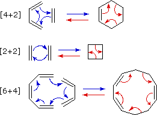
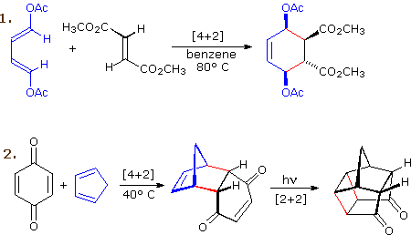
By clicking on this diagram two more examples of cycloaddition reactions will be displayed. Reaction 3 is an intramolecular Diels-Alder reaction. Since the diene and dienophile are joined by a chain of atoms, the resulting [4+2] cycloaddition actually forms two new rings, one from the cycloaddition and the other from the linking chain. Once again the addition is stereospecific, ignoring the isopropyl substituent, the ring fusion being cis and endo. The fourth reaction is a [6+4] cycloaddition.
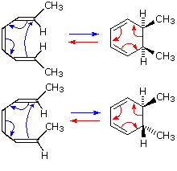 An electrocyclic reaction is the concerted cyclization of a conjugated π-electron system by converting one π-bond to a ring forming σ-bond. The reverse reaction may be called electrocyclic ring opening. Two examples are shown on the right. The electrocyclic ring closure is is designated by blue arrows, and the ring opening by red arrows. Once again, the number of curved arrows that describe the bond reorganization is half the total number of electrons involved in the process. In the first case, trans,cis,trans-2,4,6-octatriene undergoes thermal ring closure to cis-5,6-dimethyl-1,3-cyclohexadiene. The sterospecificity of this reaction is demonstrated by closure of the isomeric trans,cis,cis-triene to trans-5,6-dimethyl-1,3-cyclohexadiene, as noted in the second example. By clicking on this diagram two examples of thermal electrocyclic opening of cyclobutenes to conjugated butadienes will be displayed. This mode of reaction is favored by relief of ring strain, and the reverse ring closure (light blue arrows) is not normally observed. Photochemical ring closure can be effected, but the stereospecificity is opposite to that of thermal ring opening.

Molecular rearrangements in which a σ-bonded atom or group, flanked by one or more π-electron systems, shifts to a new location with a corresponding reorganization of the π-bonds are called sigmatropic reactions. The total number of σ-bonds and π-bonds remain unchanged. These rearrangements are described by two numbers set in brackets, which refer to the relative distance (in atoms) each end of the σ-bond has moved, as illustrated by the first equation in the diagram below. The most common atom to undergo sigmatropic shifts is hydrogen or one of its isotopes. The second equation in the diagram shows a facile [1,5] hydrogen shift which converts a relatively unstable allene system into a conjugated triene. Note that this rearrangement, which involves the relocation of three pairs of bonding electrons, may be described by three curved arrows.
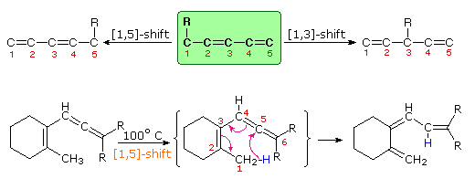
By clicking on this diagram two additional examples of thermal [1,5] hydrogen shifts will be displayed. These reactions are particularly informative in that [1,3] hydrogen shifts are not observed. The reactant in the first equation is a deuterium labeled 1,3,5-cyclooctatriene. On heating, this compound equilibrates with its 1,3,6-triene isomer, and the two deuterium atoms are scrambled among the four locations noted. If [1,3] or [1,7] hydrogen shifts were taking place, the deuterium atoms would be distributed equally among all eight carbon atoms. On prolonged heating, or at higher temperatures these cyclooctatrienes undergo electrocyclic ring opening to 1,3,5,7-octatetraene and reclosure to vinyl-1,3-cyclohexadienes. The second example shows another [1,5] hydrogen shift, from the proximal methyl group to the carbonyl oxygen atom. The resulting dienol rapidly exchanges OH for OD before the [1,5] shift reverses. In this manner the reactive methyl is soon converted to CD3. Since hydrogens alpha to a carbonyl group are known to undergo acid or base catalyzed exchange by way of enol intermediates, we might expect the α'-CH2 group to exchange as well. However, if care is taken to remove potential acid or base catalysts, the thermal [1,3] shift necessary for the exchange is found to be very slow.
The [3,3] sigmatropic rearrangement of 1,5-dienes or allyl vinyl ethers, known respectively as the Cope and Claisen rearrangements, are among the most commonly used sigmatropic reactions. Three examples of the Cope rearrangement are shown in the following diagram. Reactions 1 and 2 (top row) demonstrate the stereospecificity of this reaction. The light blue σ-bond joins two allyl groups, oriented so their ends are near each other. Since each allyl segment is the locus of a [1,3] shift, the overall reaction is classified as a [3,3] rearrangement. The three pink colored curved arrows describe the redistribution of three bonding electron pairs in the course of this reversible rearrangement. The diene reactant in the third reaction is drawn in an extended conformation. This molecule must assume a coiled conformation (as above) before the [3,3] rearrangement can take place. The product of this rearrangement is an enol which immediately tautomerizes to its keto form. Such variants are termed the oxy-Cope rearrangement, and are useful because the reverse rearrangement is blocked by rapid ketonization. If the hydroxyl substituent is converted to an alkoxide salt, the activation energy of the rearrangement is lowered significantly. The degenerate or self-replicating Cope rearrangement has been a fascinating subject of research. For examples .
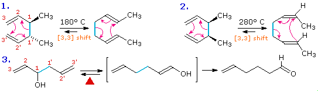
Two examples of the Claisen Rearrangement may be seen by clicking on the above diagram. Reaction 4. is the classic rearrangement of an allyl phenyl ether to an ortho-allyl phenol. The methyl substituent on the allyl moiety serves to demonstrate the bonding shift at that site. The initial cyclohexadienone product immediately tautomerizes to a phenol, regaining the stability of the aromatic ring. Reaction 5 is an aliphatic analog in which a vinyl group replaces the aromatic ring. In both cases three pairs of bonding electrons undergo a reorganization. By clicking on the above diagram a second time two examples of [2,3] sigmatropic rearrangements will be displayed. The allylic sulfoxide in reaction 6 rearranges reversibly to a less stable sulfenate ester. The weak S-O bond may be reductively cleaved by trimethyl phosphite to an allylic alcohol and a thiol (not shown). Reaction 7 shows a similar rearrangement of a sulfur ylide to a cyclic sulfide. The [2,3]-Wittig rearrangement is yet another example.
The joining of a double or triple bond to an alkene reactant having a transferable allylic hydrogen is called an ene reaction. The reverse process is called a retro ene reaction. In the bonding direction the ene reaction is characterized by the redistribution of three pairs of bonding electrons. and may be described by a cycle of three curved arrows. As noted earlier, this bond reorganization involves the overall conversion of a π-bond to a σ-bond (or the opposite in the case of retro ene fragmentation). This is the same bond bookkeeping change exhibited by electrocyclic reactions, but no rings are formed or broken in an ene reaction unless it is intramolecular. The following examples illustrate some typical ene reactions, with equation 3 being an intramolecular ene reaction. Ene reactions are favored when the hydrogen accepting reagent, the "enophile", is electrophilic. This is the case for reactions 1 and 2, which proceed under milder conditions than 3, despite the latter's intramolecular nature.
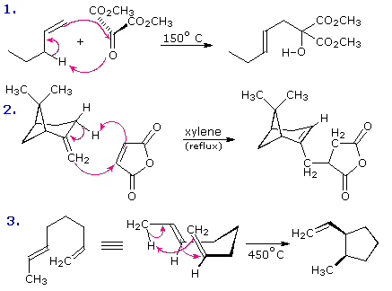
Hydrogen is the most common atom transferred in an ene reaction. Indeed, all the examples shown above involve hydrogen shifts. Other atoms or groups may, however, participate in ene-like transformations. Two such cases will be displayed above by clicking on the diagram. Reaction 4 is drawn as a retro ene reaction, although this has not been demonstrated to be general for all reactions of allylic alcohols with thionyl chloride. Equation 5 illustrates an unusual "magnesium ene reaction" in which a Grignard function moves to a new location before reacting with an electrophilic reagent such as CO2. Because this is an intramolecular ene reaction a new ring is formed. Clicking on the diagram a second time will display two additional examples. Equation 6 demonstrates that an enol tautomer, even in low concentration, may function as the hydrogen donor in the ene reaction. Equation 7 is one of many examples of Lewis acid catalysis in the ene reaction. A similar acid-catalyzed reaction of simple aldehydes with alkenes to give allylic alcohols, 1,3-diols or 1,3-dioxanes is known as the Prins reaction. Certain retro ene reactions have proven useful as synthetic transformations. Examples of these concerted elimination reactions may be examined by Clicking Here A more elaborate treatment of the intramolecular ene reaction is available by Clicking Here
One characteristic shared by most pericyclic reactions, and noted in many cases described above, is their stereospecificity. This is not the first class of reactions for which a characteristic stereospecificity has been noted. Substitution reactions may proceed randomly or by "inversion" or "retention" of configuration. Elimination reactions may occur in an "anti" or "syn" fashion, or may be configurationally random. The terms "syn" and "anti" have also been applied to 1,2-addition reactions. Since these configurational change notations are not appropriate for pericyclic reactions, new designations are needed. Cycloaddition reactions and sigmatropic rearrangements both involve pairs of σ-bond-making events (or a coupled bond-making & bond-breaking) associated with a π-electron system. If all the bonding events take place on the same face of the π-system the configuration of the reaction is termed suprafacial. If the bonding events occur on opposite sides or faces of the π-system the reaction is termed antarafacial. Suprafacial examples of these pericyclic transformations are shown below. The bracketed numbers that designate reactions of this kind sometimes carry subscripts (s or a) that specify their configuration. Thus the cycloaddition on the left may be termed a [4s + 2s] process. Although cycloaddition reactions are concerted (no intermediate species are formed), the two new bonds are not necessarily formed in a synchronous fashion. Depending on partial charge distribution in the diene and dienophile reactants, the formation of one bond may lead the development of the other. Such unsymmetrical transition state bonding is termed asynchronous.
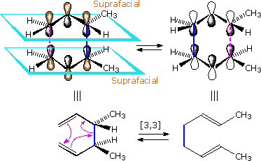
To see a model of a Diels-Alder transition state .
An example of an antarafacial [1,7] hydrogen shift is shown in the following diagram. The conjugated triene assumes a nearly planar coiled conformation in which a methyl hydrogen is oriented just above the end carbon atom of the last double bond. A [1s,7a] sigmatropic hydrogen shift may then take place, as described by the four curved arrows. With reference to the approximate plane of this π-electron system (defined by the green bonds), the hydrogen atom departs from the bottom face and bonds to the top face, so the transfer is antarafacial.
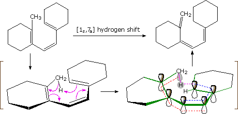
A different notation for configurational change is required for electrocyclic reactions. In these cases a σ-bond between the ends of a conjugated π-electron system is either made or broken with a corresponding loss or gain of a π-bond. For this to happen, the terminal carbon atoms of the conjugated π-electron system must be rehybridized with an accompanying rotation or twisting of roughly 90º. When viewed along the axis of rotation, the two end groups may turn in the same direction, termed conrotatory, or in opposite directions, termed disrotatory. The prefixes con and dis may be remembered by association with their presence in the words concur & disagree. These two modes of electrocyclic reaction are shown in the following diagram in the general form in which they are most commonly observed. Specific examples of these electrocyclic reactions were given earlier.
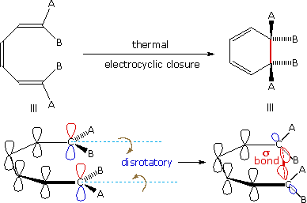
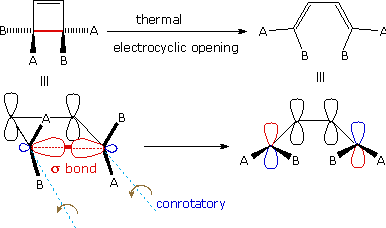
To see an animation of conrotatory electrocyclic ring closure .
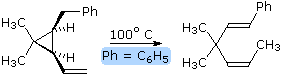 Since ene reactions usually involve coupled bond-making & bond-breaking operations associated with short π-electron systems (2 or 3 carbons), their stereospecificity is almost always suprafacial with respect to both components. This configurational feature is illustrated by the retro ene equation on the right. By clicking on the diagram, a representation of the transition state for this stereospecific transformation will be drawn. Note that bond-breaking and bond-making takes place in a suprafacial orientation with respect to each π-electron system. This reaction is facilitated by the relief of small ring strain.

Several different structural relationships between the reacting moieties of an intramolecular ene reaction are possible. The examples shown here and above represent the most common orientation. To see examples of two other arrangements Click Here.
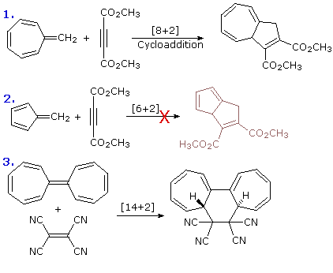
The examples of pericyclic reactions presented here provide ample evidence of their usefulness in constructing or modifying complex molecules, often with a high degree of stereospecificity. However, in contrast to the general applicability of most common ionic reactions, pericyclic reactions often display a marked sensitivity to small structural changes. Thus, stereospecificity may flip-flop, and rates may vary a million fold or more. In the case of cycloaddition reactions, the three equations on the right illustrate this fact. Equations 1 and 2 show two very similar transformations, but the first takes place with moderate heat and the second does not. Note that in each case the triple bond only contributes two electrons to the cycloaddition transition state. The common [4+2] cycloaddition known as the Diels-Alder reaction proceeds stereospecifically in a suprafacial fashion, but the [14+2] cycloaddition in equation 3 is antarafacial with respect to the polyene. Electrocyclic and sigmatropic reactions also show puzzling differences in behavior. By clicking on the diagram four examples will be shown. Equations 4 and 5 describe similar electrocyclic ring openings of stereoisomeric cyclobutenes. The first occurs under relatively mild heating, but the second requires extreme heat and may well proceed by bond homolysis to a diradical. Equation 6 shows two electrocyclic ring closures of trans,cis,trans-2,4,6-octatriene. The thermal reaction is disrotatory, and the photochemical process is conrotatory. Finally, the absence of [1,3] sigmatropic shifts of hydrogen was noted earlier, and a clear example is shown in equation 7. Isomerization of the conjugated triene to toluene should be strongly exothermic, but a concerted rearrangement of this kind would be a [1,3] sigmatropic process. In the absence of acid catalysts this triene is completely stable to moderate heating. Any [1,5] hydrogen shifts that take place reform the starting triene and would require isotopic labeling to prove. Of course, the isomerization to toluene occurs rapidly if acid is added.
Before pericyclic reactions can be put to use in a predictable and controlled manner, a broad mechanistic understanding of the factors that influence these concerted transformations must be formulated. The simplest, albeit least rigorous, method for predicting the configurational path favored by a proposed pericyclic reaction is based upon a transition state electron count. In most of the earlier examples, pericyclic reactions were described by a cycle of curved arrows, each representing a pair of bonding electrons. The total number of electrons undergoing reorganization is always even, and is either a 4n+2 or 4n number (where n is an integer). Once this electron count is made, the following table may be used for predictions.
ThermalReactions
Transition State Class
Configurational Preference
PhotochemicalReactions
Although this modest mnemonic does not make explicit use of molecular orbitals, more rigorous methods that are founded on the characteristics of such orbitals have provided important insight into these reactions. Since pericyclic reactions proceed by a cyclic reorganization of bonding electron pairs, it is necessary to evaluate changes in the associated molecular orbitals that take place in going from reactants to products. The following section describes approaches of this kind.
In 1965 R. B. Woodward and Roald Hoffmann of Harvard University proposed and demonstrated that concerted reactions proceed most readily when there is congruence between the orbital symmetries of the reactants and products. In other words, when the bonding character of all occupied molecular orbitals is preserved at all stages of a concerted molecular reorganization, that reaction will most likely take place. The greater the degree of bonding found in the transition state for the reaction, the lower will be its activation energy and the greater will be the reaction rate.
A general introduction to molecular orbitals was presented earlier. The simple compound ethene is made up of six atoms held together by six covalent bonds, as described in the following illustration. A molecular orbital diagram of ethene is created by combining the twelve atomic orbitals associated with four hydrogen atoms and two sp2 hybridized carbons to give twelve molecular orbitals. Six of these molecular orbitals (five sigma & one pi-orbital) are bonding, and are occupied by the twelve available valence shell electrons. The remaining six molecular orbitals are antibonding, and are empty.
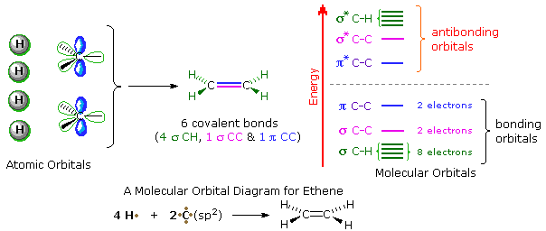
Proper molecular orbitals are influenced by all the nuclei in a molecule, and require consideration of the full structure and symmetry of a molecule for their complete description. For most purposes, this level of treatment is not needed, and more localized orbitals serve well. In the case of ethene and other isolated double bonds, descriptions of the localized π orbitals will be displayed by clicking on the above diagram. Several important characteristics of molecular orbitals need to be pointed out, and this diagram will serve to illustrate them.
1. The spatial distribution of electron density for most occupied molecular orbitals is discontinuous, with regions of high density separated by regions of zero density, e.g. a nodal plane. The π-orbital on the left has one nodal plane (colored light blue), and the π*-orbital on the right has a second nodal plane (colored yellow). As a rule, higher energy molecular orbitals have a larger number of nodal surfaces or nodes. 2. The wave functions that describe molecular orbitals undergo a change in sign at nodal surfaces. This phase change is sometimes designated by plus and minus signs associated with discrete regions of the orbital, but this notation may sometimes be confused for an electric charge. In the above diagram, regions having one phase sign are colored blue, while those having an opposite sign are colored red. 3. These localized orbitals may be classified by two independent symmetry operations ; a mirror plane perpendicular to the functional plane and bisecting the the molecule (colored yellow above), and a two-fold axis of rotation (C2) created by the intersection of this mirror plane with the common nodal plane (colored light blue). The π-orbital on the left is symmetric (S) with respect to the mirror plane, but antisymmetric (A) when rotated 180º, a C2 operation. The opposite is true for the π*-orbital on the right, which has a mirror plane symmetry of A and a C2 symmetry of S. Such symmetry characteristics play an important role in creating the orbital diagrams used by Woodward and Hoffmann to rationalize pericyclic reactions.
A model of the p and π orbitals of a double bond may be examined by .
The original approach of Woodward and Hoffmann involved construction of an "orbital correlation diagram" for each type of pericyclic reaction. The symmetries of the appropriate reactant and product orbitals were matched to determine whether the transformation could proceed without a symmetry imposed conversion of bonding reactant orbitals to antibonding product orbitals. If the correlation diagram indicated that the reaction could occur without encountering such a symmetry-imposed barrier, it was termed symmetry allowed. If a symmetry barrier was present, the reaction was designated symmetry-forbidden. Two related methods of analyzing pericyclic reactions are the transition state aromaticity approach, and the frontier molecular orbital approach. Each of these methods has merit, and a more detailed description of each may be examined by clicking the appropriate button below.
Before reviewing representative examples of various types of pericyclic reactions, the previous caution that a given transformation be truly concerted must be emphasized again. The two equations shown in the following diagram describe [2+2] cycloaddition reactions. The second example is particularly interesting because a [4+2] Diels-Alder cycloaddition is possible, but provides only a minor product. A careful examination of these reactions, using probes for ionic and radical intermediates, has shown that these are not concerted transformations. The dipolar and diradical intermediates proposed for these reactions will be illustrated by clicking on the diagram.
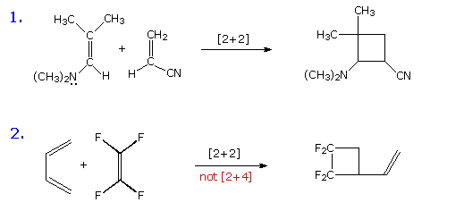
By clicking on the above diagram a second time, an apparent electrocyclic ring opening reaction will be shown. The symmetry favored conrotatory concerted path would generate a very strained trans-cyclohexene double bond, and is energetically unlikely. Instead, a higher activation energy bond cleavage to a diradical intermediate takes place on heating. The racemic diastereomer of this compound undergoes the same ring opening at a lower temperature, and this is believed to be a concerted conrotatory electrocyclic reaction..
With this caveat in mind, extensive lists of pericyclic reactions may be assembled, and their rationalization by the previously noted mnemonic or orbital analysis is both remarkably successful and instructive. Many of the reactions cited earlier, together with additional examples, will be displayed by clicking on the appropriate button.
When both components of a cycloaddition reaction are unsymmetrically substituted two regioisomeric cycloadducts are possible. In the case of Diels-Alder reactions, these are shown here for both C-1 and C-2 substituted dienes and monosubstituted (Z) dienophiles. Some chemists refer to the isomeric adducts as ortho, meta and para, in reference to similar disubstitution isomers of benzene. As a rule, the C-1 substituted dienes form ortho-adducts predominantly, and C-2 substituted dienes produce para-adducts as the major product. By clicking on the diagram two examples of this regioselectivity will be shown.
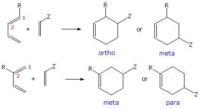
The first example is especially interesting because the conjugated triene encompasses two diene moieties, each of which might participate in a Diels-Alder reaction. In this case the less substituted diene reacts more rapidly, reflecting the general sensitivity of this cycloaddition to steric hindrance. The major [4+2] product is not only the ortho isomer, despite the crowding together of substituents, but is also the endo stereoisomer (note the cis-relationship of the unsaturated side-chain and the aldehyde function). The second example shows the preference for para adducts from C-2 substituted dienes. By clicking on the diagram a second time, two more examples of regioselectivity will appear. The product from the 1,2-disubstituted diene in example 3 demonstrates the stronger directing influence of the C-1 substituent. The disubstituted quinone in example 4 likewise demonstrates the directive influence of alkyl substituents on a dienophile. Unfortunately, neither molecular orbital symmetry analysis nor the simple mnemonic rules based on electron counts explain these regioselectivities.
Both Diels-Alder and ene reactions are catalyzed by Lewis acids. The two examples of Diels-Alder catalysis in the following diagram illustrate the improvement in yield and regioselectivity that often accompanies such catalysis. Although aluminum trichloride may serve as a catalyst (second row in example 1), the more soluble and less harsh mono- or di-ethyl derivative is usually used, as noted in example 2. Despite disubstitution of the diene and the dienophile in this case, the endo adduct is formed with high regioselectivity and yield at a relatively low temperature.
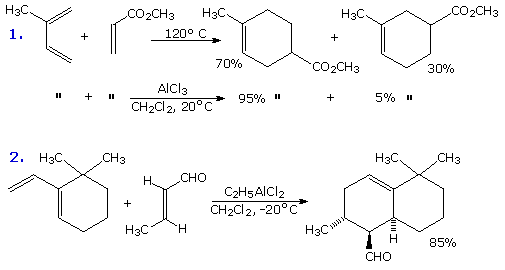
In some cases Lewis acid catalysis may change the regioselectivity of a Diels-Alder reaction. An example will be displayed above by clicking on the diagram. The endo adduct is favored under both conditions. Even intramolecular Diels-Alder reactions may benefit from catalysis of this kind, as will be demonstrated by clicking on the diagram a second time.
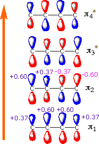
Previous discussions of orbital symmetry factors have focused on phase congruence in bonding interactions. In order to extend this treatment to account for different relative orientations of reactants, it is necessary to evaluate the magnitude of the HOMO and LUMO orbitals at each atom. This orbital magnitude is usually represented by a coefficient, derived from the wave equations for the pi-orbitals. These orbital coefficients also have a sign (plus or minus) reflecting their phase. In the case of 1,3-butadiene, shown to the left, the lowest energy pi-orbital (π1) has smaller orbital coefficients at C-1 and C-4, and larger coefficients at C-2 and C-3. The numbers given in the diagram are arbitrarily taken from a simple wave function calculation. The remaining three pi-orbitals have similar coefficients (± 0.37 or 0.60), but the location of the higher coefficient shifts to the end carbons in the HOMO and LUMO orbitals (π2 & π3 respectively). Of course, the phase signs change to designate an increasing number of nodes. A model showing the orbital coefficients and phase differences in 1,3-butadiene may be examined by .
Unsymmetrical substitution of a diene or dienophile perturbs the orbital coefficients in an unsymmetrical fashion. Calculations of orbital coefficients in such cases leads to an attractive explanation of the regioselectivity that characterizes their Diels-Alder chemistry. The most common situation finds electron withdrawing substituents (Z) on the dienophilic double bond, and electron donating substituents (Y) on the diene. The bonding interaction will therefore have electrons flowing from the HOMO of the diene to the LUMO of the dienophile. No other orbitals need to be considered, and the initially most significant bonding interaction is expected between those sites having the largest orbital coefficients. A qualitative representation of the relative magnitude of terminal orbital coefficients for the HOMO and LUMO orbitals of alkenes (dienophiles) and dienes substituted in this common manner are illustrated in the following diagram. The dienophile data is reasonably consistent, but the diene LUMO coefficients show variability. As noted above, it is the diene HOMO and dienophile LUMO patterns that are most important. By clicking on the diagram, the preferred orientation of reactants for the initial bonding interaction will be displayed. This orientation agrees with the regioselectivity reported above.
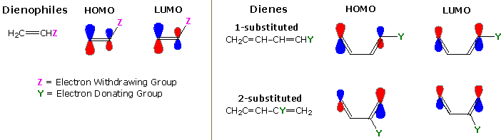
It must be emphasized that the concerted nature of [4+2] cycloaddition reactions is not negated by focusing on an initial bonding site. Indeed, an unsymmetrical substitution of the reactants implies that suprafacial development of the two new sigma bonds will also be unsymmetrical (i.e. one bond may be nearly established in the transition state, while the other is only slightly formed). Thus, an array of transition states ranging from symmetrical to extremely unsymmetrical can be envisioned. These states, however, share the common characteristic of a compact, highly organized, suprafacial complex of diene with dienophile, as evidenced by a large negative entropy of activation as well as a negative activation volume.
A model of a Diels-Alder transition state that illustrates the uneven bonding associated with unsymmetrical reactants may be examined by .
In many cases, this analysis of HOMO and LUMO orbital coefficients also provides a good explanation for the beneficial influence of Lewis acid catalysis. The dienophiles in the examples cited above were all activated by an electron withdrawing carbonyl group. Lewis acids complex with the basic oxygen atom of such functions, rendering them more electrophilic. Conjugation with the dienophilic double bond increases the orbital coefficient remote to the carbonyl group, and therefore facilitates [4+2] cycloaddition to the associated regioisomer. If the two ends of the dienophile each have a carbonyl substituent, as in the case of quinones and anhydrides, then Lewis acid catalysis may change the regioselectivity of the cycloaddition.
Molecular orbital calculations that give pi-orbital coefficients for dienes and dienophiles are beyond the scope of this text. However, there is a simple mnemonic trick that will predict regioselectivity in many cases. It involves drawing the four possible diradical intermediates that can be formed by homolytic bonding at one end of each reactant. Once these have been distinguished, as they have for a 1-substituted diene in the following diagram, the most stable diradical species will usually identify the regioselectivity of that reaction. This artifice works because both electron donating substituents, such as alkyl, alkoxyl and amino, and electron withdrawing substituents, such as nitro, cyano and carbonyl, exert a stabilizing influence on adjacent radicals, unlike their opposite effects on adjacent positive and negatively charged atoms. In the absence of any substituents, the diene moiety contributes an allylic radical (1º & 2º) and the dienophile a 1º radical. As noted, substituents Y and Z will stabilize adjacent radicals, so diradical I will be favored and should lead to the preferred regioisomeric product. Always remember, this is just a mnemonic trick, most Diels-Alder reactions are concerted and do not proceed through a diradical intermediate.
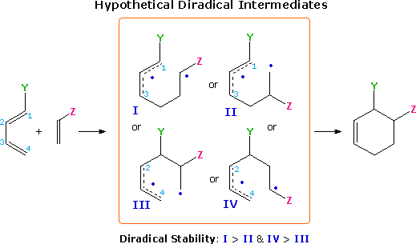
By clicking on the above diagram, an example of this analysis to the reaction of a 2-substituted diene with a substituted dienophile will be displayed.
A novel group of [4s + 2s] cycloaddition reactions leading to five-membered heterocyclic adducts are classified as dipolar cycloadditions. Instead of dienes, these reactions make use of dipolar heteroatom compounds, commonly referred to as 1,3-dipoles. To learn more about these reactions Click Here.
An outstanding treatment of pericyclic reactions, including lots of challenging questions with answers, has been provided by Henry Rzepa. To reach his Imperial College home page Click Here. The link to Dr. Rzepas pericyclic reaction site will be found under Teaching, Training and Internet Innovation Highlights. If you have trouble finding this site, try the menu bar that will be presented by Clicking Here.
Return to Table of Contents